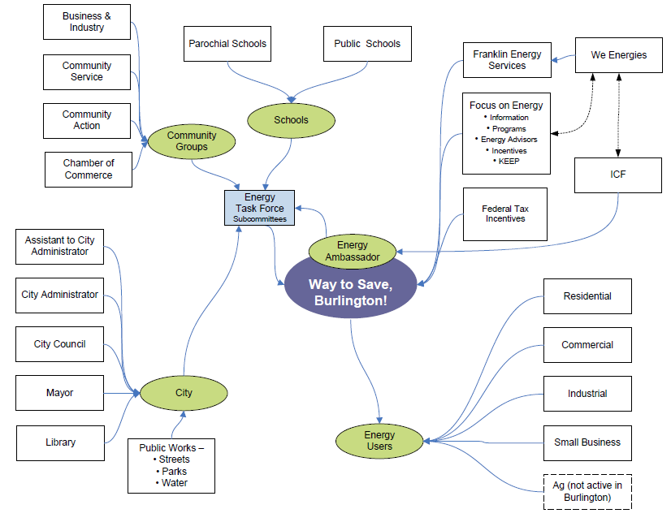

Tools Used
- Obtaining a Commitment
- Overcoming Specific Barriers
- School Programs that Involve the Family
- Word of mouth
Initiated By
- We Energies
- ICF International
Partners
- City of Burlington
- Chamber of Commerce
- Economic Development Corporation
- Local schools
- Local media and other local businesses
Results
Program participants that signed a pledge to reduce energy had a higher level of participation in existing energy efficiency incentive programs, their levels of participation increased over time, and they also indicated an increasing sense of responsibility to conserve energy.
Way to Save Burlington!
The Way to Save, Burlington! pilot program was a community-based approach to marketing energy efficiency. Unlike many other community-based energy efficiency programs, no new measures were offered and existing rebate levels were not enhanced. The pilot increased active participation in existing conservation programs among all customer segments: residential, commercial, and industrial.
Background
We Energies is Wisconsin’s largest energy utility based in Milwaukee, WI, USA. Small towns in We Energies’ service territory had generally been harder to reach in terms of energy efficiency measures (both behaviorally and in terms of program participation).
Burlington was representative of many towns in We Energies’ service area:
- Population: 10,000 - 15,000
- Typical energy use profiles
- Strong industry presence
- Not the target of similar efforts
- Outside major metropolitan areas
- Community pride and spirit
We Energies and ICF International, the pilot’s implementation contractor, met with city leaders to assess Burlington’s interest in and appropriateness for a pilot program. The pilot was initiated in July 2010 and was originally designed to operate for one year; however, it was extended to three and a half years in order to more fully understand program impacts.
Setting Objectives
The goal for the pilot was to determine whether the pilot’s innovative strategies could be cost-effective implemented across We Energies’ programs.
In addition, the Energy Task Force set two objectives
- Generate 1% energy savings annually within Burlington, Wisconsin, and
- Collect 2,250 pledges to save energy from community members by December 2013.
Getting Informed
Three main barriers were identified:
- Limited customer awareness of energy efficiency
- Limited motivation to take energy efficiency actions
- Potential lack of trust of the government and/or the utility.
Delivering the Program
Energy savings were achieved through creative marketing, resourceful outreach, and strategic relationships to drive participation in existing energy efficiency programs offered by the statewide utility-funded Focus on Energy. Initiatives and activities included stakeholder communication, school energy fairs and competitions, corporate fairs, media outreach, rewards programs, energy makeover contests, workshops, presentations and promotional events.
The four core elements of the pilot were:
- The “Energy Ambassador,” who worked with all segments of the community to identify and eliminate potential barriers. His role was to integrate into community, act as a catalyst, and connect residents, businesses and institutions with existing energy efficiency programs as well as energy behavior information.
- The Energy Task Force, which served as an advisory board to the program and which was made up of volunteer community leaders including the Mayor, Assistant Superintendent of the school district, President of the community bank, business leaders, CFO of a local manufacturer, We Energies’ Local Affairs Account Manager, Director of the local community action agency, and the Editor in Chief of the local newspaper. This group met regularly, assisted in creating community-specific marketing plans, and sets the goals for the Community Challenge.
- The Community Challenge, which had two goals: energy savings and behavioral changes.

- The Pledge. To participate in the CEP Program, customers “pledged,” or agreed to undertake their choice of up to five specific energy-saving actions. Participants were only asked to pledge once it was clear that they were pre-disposed to doing the behaviors. Most pledging occured though school energy competitions. (Obtaining a Commitment, School Programs)
Building trust was accomplished by the Energy Ambassador having enough time to establish strategic relationships and leveraging those relationships in an effort to touch harder to reach segments,(Credible, Personalized, Empowering Communications)
Tailoring messaging and outreach to each segment in the community was essential. For example, messaging used in reaching out to the business community was different that that used at school events or residential outreach.
The program conducted workshops at the Burlington Public Library, Boardwalk Apartments, LOVE, Inc., and Chamber of Commerce. It ran promotional events at a Burlington High School basketball game, orchestra concert, school conferences, Burlington Chamber of Commerce, Home Expo and golf outing, holiday parade, Racine County Triad West Mardi Gras, farmers’ markets, grocery stores, hardware stores and Walmart. It also made presentations to local organizations, such as the Chamber of Commerce, Rotary, Lions, Women’s Business Club, and local Sierra Club Chapter.
Way to Go Burlington helped organize and assist local corporate energy teams and participated in local environmental, safety and health fairs. To reach smaller businesses, it conducted blitzes and outreach in collaboration with the local Economic Development Corporation.
Web-based media promotion incuded a program website, twitter feed and Facebook page. Local retailers displayed in-store materials.
Measuring Achievements
There were four main impact measures for the project:
- Energy use (utility data)
- Deemed energy savings from program participation (uptake of existing incentive offers)
- Self-reported behaviors (survey)
- Self-reported attitudes (survey)
Watertown served as a comparison community (non-randomized control or Quasi-Experimental Design.)
Results
1. Energy use
The analysis did not find significant differences in energy use between the two communities as a whole.
2. Deemed energy savings from program participation
According to tracking data from local energy efficiency incentive programs, customers in Burlington experienced a net increase in deemed program savings, compared to customers in Watertown. This suggests that one outcome of the CEP Program was to increase the level of participation in these programs among those who signed a pledge card.
- Residential Programs. The CEP program period correlated with a net increase of 18% in deemed Therm savings, and 22% in deemed kWh savings, but a net decrease of 3% in deemed kW impacts.
- Commercial Programs. The CEP program period correlated with a net increase of 5% in deemed Therm savings, 122% in deemed kWh savings, and 86% in deemed kW impacts for commercial programs.
- All Programs. The CEP program period correlated with a net increase of 8% in deemed Therm savings, 109% in deemed kWh savings, and 78% in deemed kW impacts.
3. Self-reported behaviors
Overall, Burlington customers were no more likely to adopt energy efficient attitudes and behaviors than their counterparts in Watertown. However, customers who made the pledge to save energy tended to conduct no- and low-cost energy-saving actions and they reported increasing the number of actions they took over time. This increase was not seen in the general population.
4. Self-reported attitudes
The participant survey showed that over time fewer participants agreed with the statement “If I can pay for it, I have the right to use as much energy as I want.” While it may be the case that customers who were more aligned with energy efficiency were more likely to pledge, it is also the case that over time they indicated an increasing responsibility to conserve energy.
Notes
Way to Save, Burlington! can serve as a model, which can be adapted, scaled and applied to a wide range of communities. In addition to energy efficiency, programs based on this model could be effective in providing education and outreach to utility customers regarding disaster preparedness, safety, outage reports, K-12 energy education, and electric vehicle programs. This model can also enhance customer service and connect customers to useful technologies and information.
Lessons Learned
Further details on each can be found in section ES.4 of the Final Evaluation Report (accessible at the bottom of the left hand column.)
Measuring Program Activity
- Evaluations are more effective when programs are designed with the evaluation in mind and when goals are established early in the program design phase.
- Customers need a way to monitor their progress toward program goals.
Marketing and Outreach
- Different customer groups responded differently to each marketing channel. In the case of residential customers, survey results indicated that the public billboard was the most common method in reaching customers described as belonging to the youth or mature customer group, whereas newspaper advertisement was the most effective method in reaching customers described as the family customer group. In the case of commercial customers, the most effective methods were: town meetings for the services group; the Burlington Standard for the offices group; and the public billboard display for the miscellaneous group.
- A person in the community who takes an active role in the program (such as the CEP Program Energy Ambassador) is a useful means of increasing participation and awareness. Survey respondents rated the information provided by the Energy Ambassador as the most useful of all marketing and outreach efforts, and 20% of respondents who stated they had participated in a Focus on Energy program said they heard about the program directly from the Energy Ambassador.
- The Way to Save, Burlington! (program) website was the most common way that CEP participants learned of Focus on Energy programs.
Attitudes and Behaviors
- The act of pledging was correlated with the adoption of energy efficient behavior among residential customers, especially for those who were able to recall their pledge.
- The majority of customers already perceived their behavior as energy-efficient.
- Commercial customers encountered unique barriers to adopting energy efficient practices. More so than residential customers, commercial customers encountered barriers resulting from costs, other priorities, and the lack of local personnel responsible for energy management.
- The top six motivators for taking energy efficient actions included three that were a direct result of the pilot program (as indicated by asterisks): 1. Saving money, 2. Using less energy, 3. Encouraged by a family member as a result of the School Energy Competition*, 4. Contributing to the community goal*, 5. Being “green”, and 6. Encouraged by Way to Save, Burlington! information*.
- The top five energy saving actions taken among respondents since taking the pledge included: 1. Switching off lights when leaving rooms, 2. Switching off electronics when not in use, 3. Installing energy efficient lightings, 4. Changing/programing thermostat settings appropriately, and 5. Using a clothesline.
Logic Model

Process Mapping
Energy Users

Community Groups

Stakeholders

This case study was written in 2014 by Jay Kassirer.